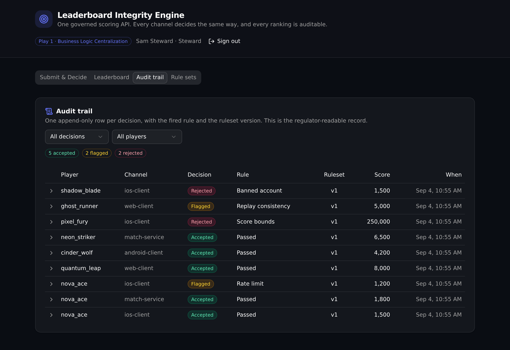

One governed scoring API that every client, service, and tool calls to submit a player score. A single versioned rule set decides accept, flag, or reject, names the exact rule that fired, and writes an audit row. So every channel scores the same way, and no client can seat a bad score on the board.
Play 1 · Business Logic Centralization Competitive gaming platform
Score validation rules usually live scattered across each client build and each backend service. When two channels drift, a cheated score can slip onto the board. This app pulls those rules into one governed API layer. Every submission runs through a single versioned rule set, so every channel decides the same way, and every decision traces back to the exact rule and the version that produced it.
banned_account: reject a banned player before scoring.score_bounds: reject a score outside the allowed range.rate_limit: flag a player over the per-hour submission cap.replay_consistency: flag a score whose points per second exceed the ceiling.A React and Vite frontend that derives every request path and type from the backend defs (the one contract).
Pick a player and channel, enter a score, and see the live verdict: the decision badge, the deciding rule, the ruleset version, and the reason, beside the rule set in force.
The ranked board, accepted scores only, with a region filter. Cheated submissions never appear here, because only accepted entries exist in the table.
The append-only decision log, filterable by decision or player, each row expandable to the fired rule and version. Admin gated.
The active rule set and the full version history, with a steward-only publish form that re-arms the whole engine at once.
Seven API groups, ten endpoints. One shared function holds the ordered rules, so every channel scores the same way.
| Verb | Path | What it enforces |
|---|---|---|
| POST | /api:scoring/submit | Runs the active rule set, writes the submission and an audit row, seats a leaderboard entry only on accept. Open to any channel. |
| GET | /api:scoring/decision | The decision, fired rule, version, and reason for one submission. |
| GET | /api:leaderboard/rankings | The ranked board (accepted only), with an optional server-side region filter. |
| GET | /api:audit/submissions | The append-only decision log, enriched with player and channel.admin token |
| GET | /api:rulesets/active | The rule set currently in force. |
| GET | /api:rulesets/list | The full version history. |
| POST | /api:rulesets/publish | Publishes a new active version and retires the prior one.steward role |
| GET | /api:players/roster | Players and their status. |
| POST | /api:authn/login | Admin login. Issues an auth token. |
| POST | /api:seed/run | Resets and re-seeds sample submissions through the real engine. |
Clone it and stand up your own live copy in about a minute. Every screen and endpoint is real, and the ephemeral re-seeds itself on each deploy.
# clone, install, authenticate once, deploy git clone https://github.com/xano-scratch/leaderboard-integrity-engine cd leaderboard-integrity-engine npm install npx xanots login npm run xano:deploy # builds the frontend, deploys the backend, prints the live URL
Or hand this prompt to a Xano-aware coding agent:
Start from the Xano template at https://github.com/xano-scratch/leaderboard-integrity-engine Clone it, run npm install, then npx xanots login and npm run xano:deploy to stand up a live copy. Then adapt the ordered rules in xano/functions/decide.ts and the tables under xano/tables to my domain.
npm run xano:deploy for fresh links.